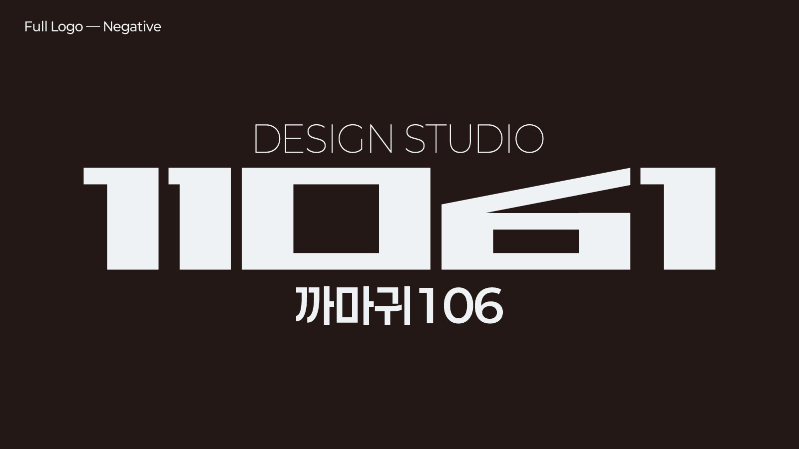
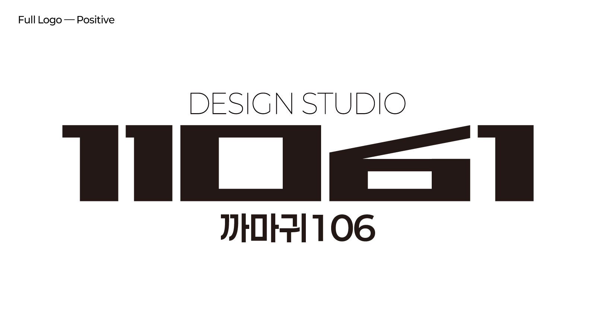
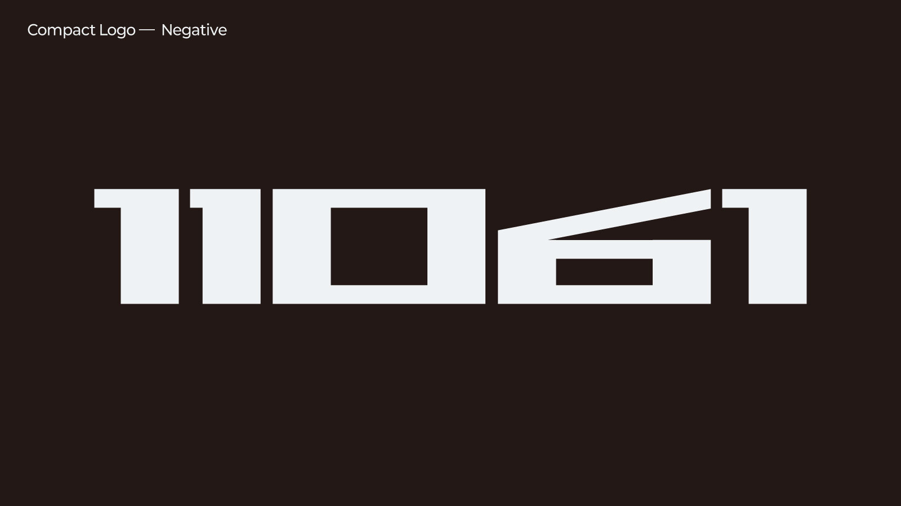
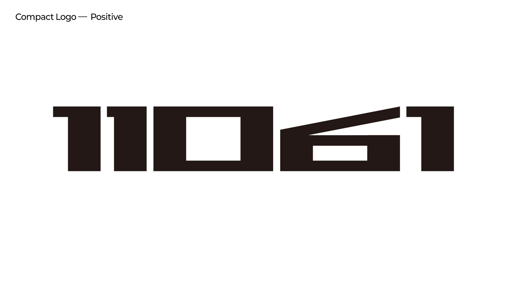
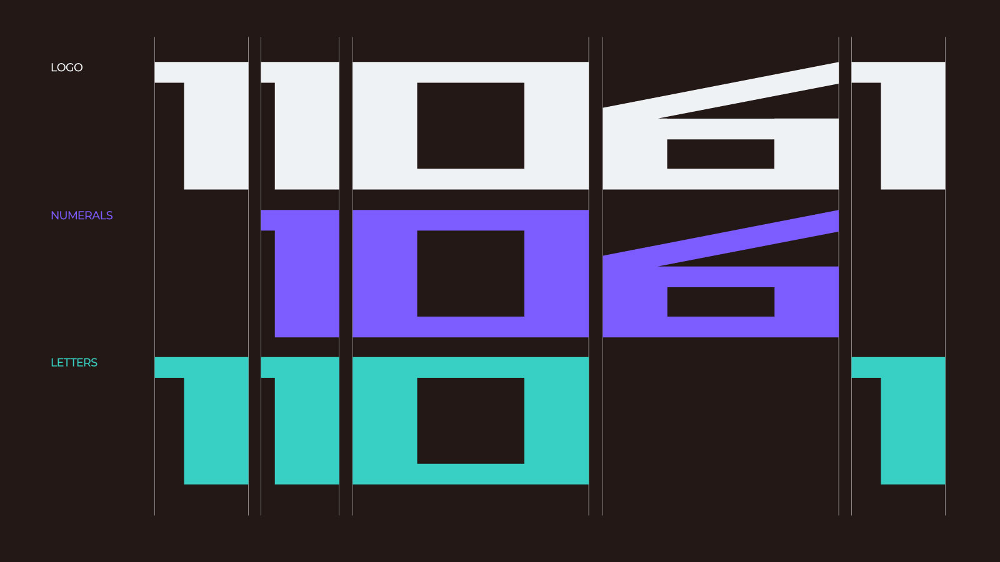
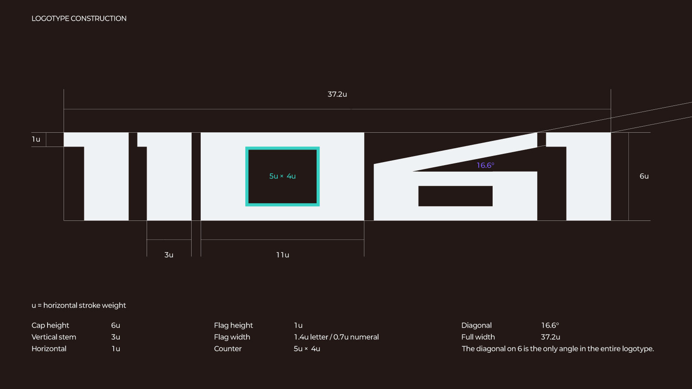
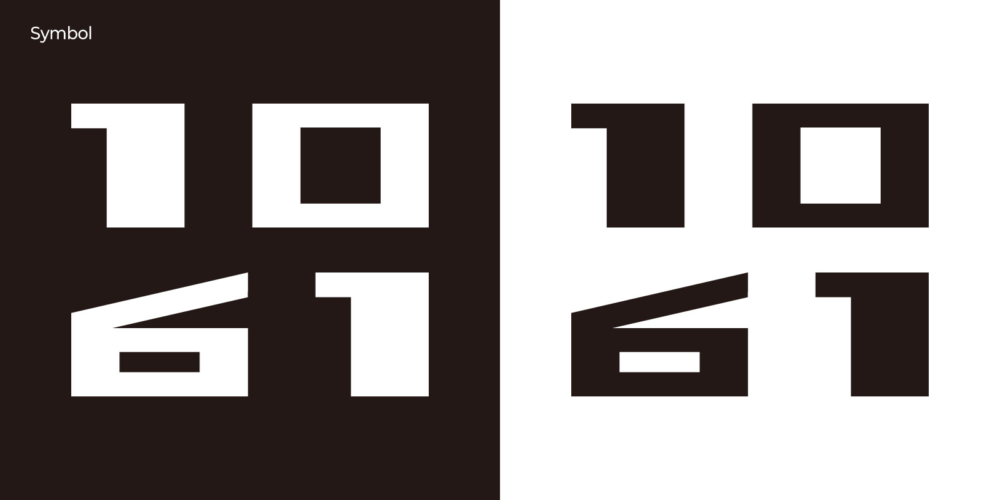
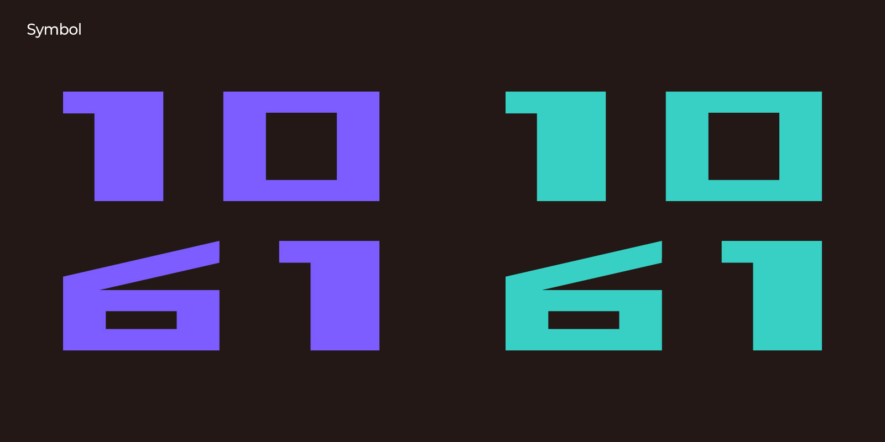
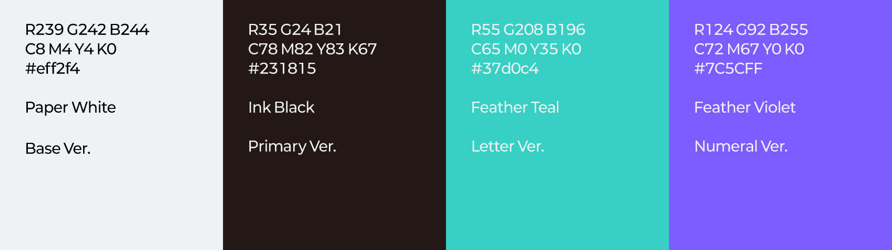
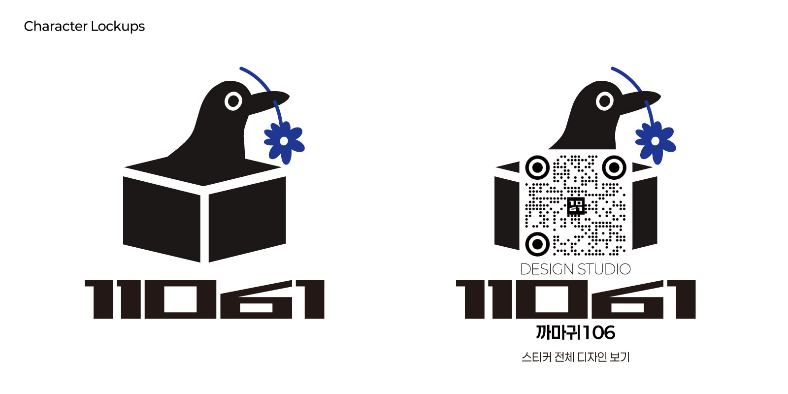

까마귀106의 이름은 구미 금오산에서 출발한다. 아도화상이 저녁놀 속을 나는 황금빛 까마귀를 보고 금오산이라 이름 지었다고 전한다. 금오(金烏)는 해 속에 산다는 새로, 태양의 정기를 뜻한다. 어두운 새이면서 동시에 빛인 셈이다. 하나로 보이지만 둘인 것. 까마귀106의 작업은 대체로 여기서 시작한다.
이름을 지을 때는 뜻을 담는다. 로고는 그 뜻을 눈에 보이게 만드는 일이다.
로고타입은 다섯 개의 글자로 이루어진다. 1 1 0 6 1. 앞의 넷 중 셋을 초성으로 읽으면 ㄲ ㅁ ㄱ, 까마귀가 된다. 가운데부터 셋을 숫자로 읽으면 106이 된다. 두 읽기는 나란히 놓이지 않고 가운데 두 글자를 공유한다. 하나의 형태 안에서 상호명 전체가 겹쳐 있다.
획은 굵고 각지게 다듬었다. 곡선을 줄이고 수직과 수평만 남겼다. 두 가지로 읽히려면 형태 자체는 흔들림이 없어야 하기 때문이다. 사선은 6에 단 한 번만 쓰인다.
색도 같은 방식이다. 먹빛을 기본으로 두되, 보조 색은 보라와 청록에서 가져왔다. 까마귀 깃털이 검으면서 동시에 빛나는 것과 같다.
심볼은 별도의 형태가 아니다. 같은 글자를 두 줄로 앉힌 것이다. 이름의 구조가 이미 형태이기 때문에, 새로 만들 것이 없었다. 어느 쪽으로 읽어도 무너지지 않는다.